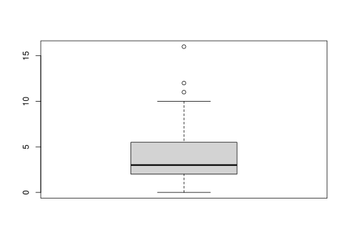
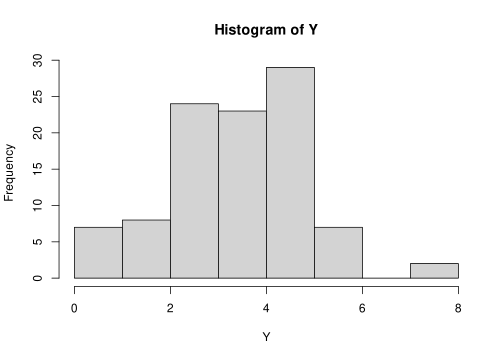

Chapter 2 Statistical modelling
As R was written by statisticians for statisticians, it naturally has very good support for statistical modelling.
2.1 Distributions
R includes functions to calculate probabilities and generate random data from a wide variety of distributions (type ?distributions for an overview).
| Distribution | R name | Parameters |
|---|---|---|
| Binomial | binom |
size (\(n\)), prob (\(\theta\)) |
| Chi-squared | chisq |
df |
| F | f |
df1, df2 |
| Normal | norm |
mean (\(\mu\)), sd (\(\sigma\)) |
| Student’s t | t |
df |
The statistical distribution functions all have a similar interface:
- you can generate random data by calling the R name with an
r(for random) before it (e.g.rbinom) - you can compute the probability (or density function value) of a particular value by calling the function with a
d(for density) before it (e.g.dbinom) - you can compute a cumulative probability (the probability of a particular value and anything lower than it) by calling the function with a
p(for probability) before it (e.g.pbinom) - you can compute a quantile (the value such that there is a particular probability of sampling a value equal to or lower that it) by calling the function with a
q(for probability) before it (e.g.qbinom)
2.1.1 Generating random data
let’s use a coin tossing model to generate lots of replications of an experiment in which Paul is asked to provide 8 predictions. The dependent variable in each experiment is \(Y_i = k\), where \(k\) is the number of correct predictions (out of \(n=8\)). To generate 100 replications of such an experiment (e.g. 100 “alternate universes” where Paul might have made different predictions), we can use the rbinom function:
## [1] 5 4 5 2 5 2 4 5 3 4 3 5 4 5 3 4 6 3 2 3 0 3 5 5 1 2 5 4 6 3 5 4 4 1 3 5 3
## [38] 5 6 8 5 5 3 2 3 3 3 5 4 5 4 2 2 4 5 3 5 4 4 5 3 5 5 5 2 3 4 8 1 6 4 3 4 4
## [75] 3 6 3 4 5 4 1 3 1 5 3 5 4 5 5 4 5 3 3 6 4 4 3 5 1 6You can see quite some variability in the outcomes, perhaps easier in a histogram

Computers can’t actually generate real random data. Computers are deterministic, performing computations according to instructions. But clever algorithms have been designed that produce sequences of numbers that are (almost) indistinguishable from purely random sequences. These algorithms are called random number generators and the default in R is the so-called “Mersenne-Twister” algorithm. You don’t have to worry about the details of such algorithms. We can just pretend that they produce truly random numbers. One thing I do want to point out is that before you use one of such algorithms, they need to be initialized with a special number, called the random seed. A number like this basically sets the algorithm in motion. Starting it with a different seed will produce a different sequence of random numbers. If you start it with the same random seed, you get exactly the same sequence of random numbers. If you don’t supply a value, R will use the current time as the random seed the first time you ask it to produce a random number in a session. For the purposes of replicating things, it may be useful to set the seed explicitly (so that a subsequent call to a random number generator will produce exactly the same results.) Therefore, you will now and then see calls such as set.seed(4638) in these notes, which ensures that these notes have the same content every time I run R.
2.2 Estimation
2.2.1 The likelihood function
If we take a particular result, e.g. \(Y=8\) correct, it is straightforward to compute the probability of that result for different values of \(\theta\). Earlier, we already used 1:10 to obtain a sequence of integers from 1 to 10. Not we ae going to use a more general function seq, to obtain a sequence of possible values for \(\theta\) between 0 and 1. We will then supply this sequence as the prob argument to calculate the probability of the result according to each.
possible_theta <- seq(0,1,length=100)
lik_theta <- dbinom(8,size=8,possible_theta)
plot(x=possible_theta,y=lik_theta,type="l")
Instead of the first argument in dbinom being 8, you can try this for different values.
The maximum likelihood estimate \(\hat{\theta} = \frac{k}{n}\) is very simple to compute. Moreover, computations with R are vectorized. For instance, if Y is a vector, then Y/8 divides each element of Y by 8. And if Y and X are vectors of the same length, then Y/X divides each element of Y by the corresponding element of X.
So, to compute the maximum likelihood estimate of \(\theta\) for each of the simulated replications of the experiment, we can simply run:
which stores the estimates in the object theta_est.